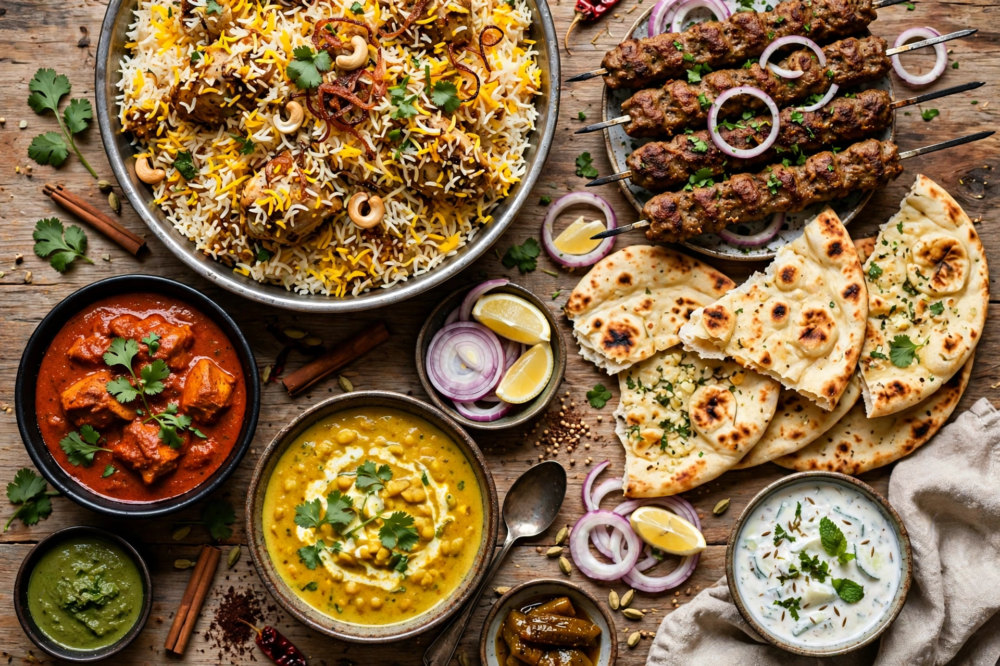

Pakistani cuisine

Pakistani cuisine (Urdu: پاکستانی پکوان) comprises the cooking traditions of Pakistan, blending influences from the wider Indian subcontinent, Central Asia and the Mughal court. It is characterised by rich, aromatic spicing, extensive use of meat, lentils, yoghurt and flatbreads, and pronounced regional variation between Punjab, Sindh, Khyber Pakhtunkhwa, Balochistan and the northern areas.
Regional styles
Punjabi cooking, centred on Lahore, is known for hearty dishes such as nihari (slow-cooked beef shank stew), haleem, and tandoori meats. Sindhi cuisine is notably spicy, with Sindhi biryani a famous example. Pashtun cooking from Khyber Pakhtunkhwa favours grilled meats — chapli kebabs, namkeen gosht — and comparatively mild seasoning. Balochi traditions include sajji, whole lamb roasted over an open fire. Karachi, a port and migrant city, is renowned for its street food and for popularising biryani and barbecue nationwide.
Staples and dishes
Wheat flatbreads (roti, naan, paratha) and basmati rice are staples. Biryani and pulao are festive rice dishes; curries (salan) of chicken, mutton, beef and vegetables accompany most meals, alongside dals and raita. Popular snacks include samosas, pakoras and chaat. Desserts such as gulab jamun, kheer, falooda and kulfi are common, and meals are often accompanied by green tea (kahwa) in the north or sweet milky chai elsewhere. Barbecue — seekh kebabs, tikka and malai boti — is a major restaurant tradition, especially around Eid and weddings.
Dietary character
As a predominantly Muslim country, Pakistan observes halal dietary laws; pork is absent and alcohol is not part of mainstream food culture. Ramadan brings distinctive iftar spreads, and food-centred hospitality is a strong cultural value.
See also: Mughlai cuisine, Punjabi cuisine, Biryani, Lahore.